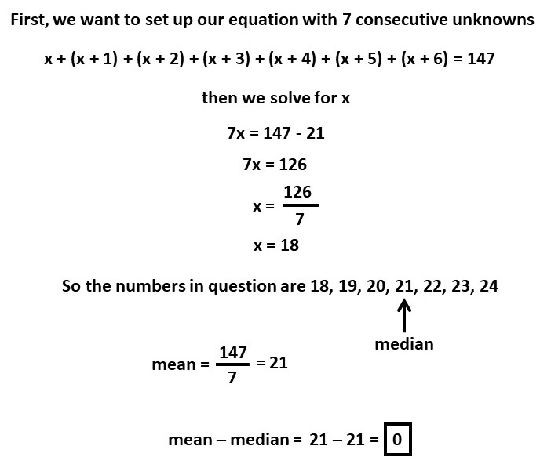

Academic Subjects
➤
Math
➤
Algebra
➤
Algebraic Equations
➤
Mean - Median Of 7 Consecutive Numbers Adding Up To 147
Seven consecutive whole numbers add up to 147.
What is the result when their mean is subtracted from their median
